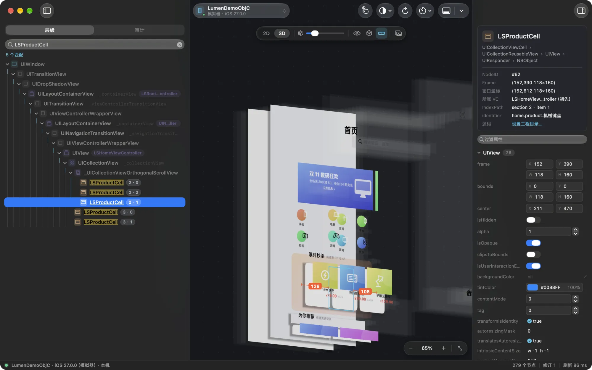
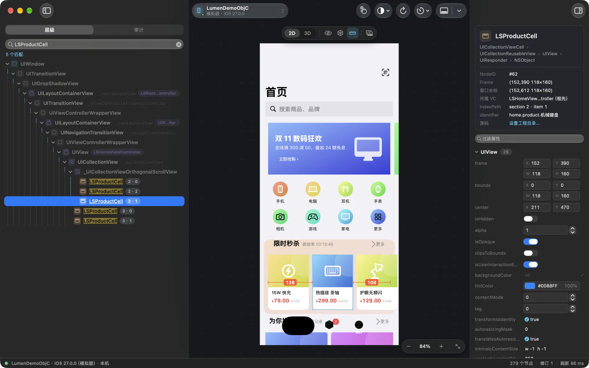
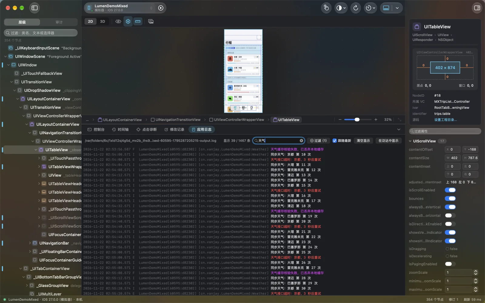
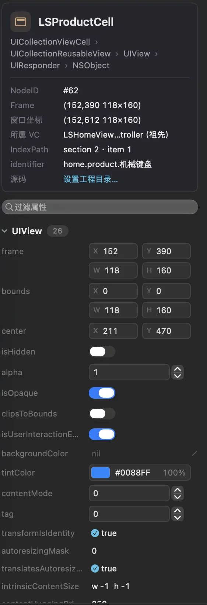
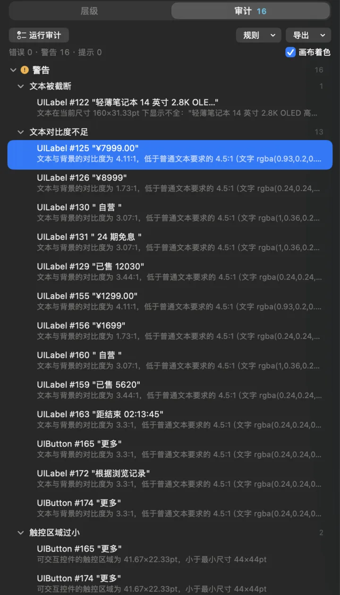

排查
按钮点了没反应
登录页的「忘记密码」按钮点了没反应。用 Lumen 查一下它是被别的视图挡住了，还是触控区域太小，告诉我原因和该改哪个文件。
- find_text
- hit_test
- locate_source
3D 分层查看 iOS、macOS App 的视图层级，实时改属性、查布局问题，还能交给 AI 助手直接操作。


选一个 App 点“启动”，Lumen 注入采集端、启动并自动连上。日志、检查器、画布也一起升级了。
“启动调试”窗口（⌘N）列出模拟器中的 App、Mac 应用、iOS 安装包与 USB 真机，启动过程逐步显示，成功后自动连接。
底部“应用日志”面板显示被调试 App 的输出。启动调试的 App 与集成了 LumenServer 的 App 都能看，断线重连只补发错过的部分。

几何读数卡画出父视图与所选节点，四边距离、原点与窗口坐标都在一张卡上。App 还可以把自己的状态放进检查器。
lumen_debugInfo()，带 setter 的项可直接修改contentMode 等显示名称并可下拉修改，nil 颜色与文本也能改UIAction
工具条贴在画布上缘，底部路径栏从根到所选节点逐段可点；按遮罩裁剪，网页、Metal、Lottie 内容完整显示。
⌥⌘1…⌥⌘5 按窗口与控制器展开；聚焦到某个节点只看它的子树，Esc 退出；按 App 记住展开状态。
审计找出被 mask 整个挡住或只露出一小部分的视图，并说明原因与修法。
App 退出或崩溃后，最后的层级、详情与纹理继续可看，可另存为快照；App 回来自动切回实时。
方法名预测与 Tab 补全，参数按签名逐个填写；返回的对象可以继续调用。
简体中文、English、繁體中文随时切换；外观可跟随系统、浅色或深色。
连上运行中的 App，所见即所得。
检查器按类分组列出属性，改完 App 里马上生效，不用重新编译。

实时修改，无需重编译文字截断、对比度不足、触控区域过小、遮挡、无障碍缺失，逐条列出并定位到视图。

16 条警告，点击即定位内置 MCP 服务，Claude Code、Codex、Cursor 能读层级、截图、审计、改属性，再回到源码修复。
UIButton[text*="登录"]:visiblelumen「忘记密码」按钮点了没反应，查一下原因
lumen_find_text "忘记密码" → #212 UIButton
lumen_hit_test (196, 540) → #198 UIView
lumen_get_node #198 alpha 0.01, 覆盖按钮
lumen_locate_source → LoginView.swift:88
按钮被一个几乎透明的 UIView 盖住了。它在 LoginView.swift:88 创建，设置 isUserInteractionEnabled = false 即可。
Metal 渲染，可调层间距，间距测量。
控件、修饰符链与 @State 值。
回看每次层级变化，比较两个时间点。
叠加参考图，给出还原度。
按 VoiceOver 顺序列出元素与 traits。
运行时切深色、大字号、从右到左。
完整快照存成单个文件，离线打开。
不改工程，一键注入 Mac App、模拟器、iOS 安装包与 USB 真机。
大纲行首竖条标出手势，点按查看并开关。
按类名隐藏图层及子树，可临时显示。
按平台与设备分组，标明 USB、Wi-Fi、模拟器。
App 进入后台时提示，回到前台自动刷新。
采集端 LumenServer 只进 Debug 构建，发布包里没有它。
四种方式任选：SPM、CocoaPods、一键脚本，或不改工程直接注入启动。
启动被调试的 App，Lumen 自动发现并连接。模拟器、Mac App、USB 真机都无需配置。
不想改依赖时，推荐一键脚本：只改本机 Debug 配置，可原样撤销。
Xcode 中 File → Add Package Dependencies，输入 https://github.com/wangwanjie/Lumen.git，把 LumenServer 加到 App target；或写进 Package.swift：
.package(url: "https://github.com/wangwanjie/Lumen.git", from: "0.3.0"),
// target 依赖
.product(name: "LumenServer", package: "Lumen"),启动时调用：
#if DEBUG
import LumenServer
#endif
#if DEBUG
LumenServer.start()
#endif#if DEBUG
@import LumenServer;
#endif
#if DEBUG
[LumenServer start];
#endifSPM 会在 Release 中也链接 LumenServer，#if DEBUG 保证它不启动。希望 Release 包完全不含采集端时，用 CocoaPods 或一键脚本。
只在 Debug 配置中集成，启动代码与 SPM 相同：
pod 'LumenServer', :podspec => 'https://raw.githubusercontent.com/wangwanjie/Lumen/v0.3.0/LumenServer.podspec', :configurations => ['Debug']#if DEBUG
import LumenServer
LumenServer.start() // Objective-C：@import LumenServer; [LumenServer start];
#endif在含 .xcworkspace / .xcodeproj 的工程目录运行，无需改 Podfile、Package 或写代码：
python3 /Applications/Lumen.app/Contents/Resources/lumen_setup.py只改 App target 的 Debug 配置：加一个 Run Script，构建时按平台把采集端拷进 App 的 Frameworks 并重签；在 didFinishLaunching / SwiftUI App 的 init 最前面插入加载代码。Release 构建不拷贝。所有改动带标记、可重复运行，请勿提交。
SETUP=/Applications/Lumen.app/Contents/Resources/lumen_setup.py
python3 $SETUP --remove # 原样撤销（切换分支前执行）
python3 $SETUP --dry-run # 只打印将要做的改动
python3 $SETUP --target MyApp --configs Debug
# CocoaPods：在 Podfile 加可提交的钩子，本机开启开关后 pod install 自动接入
python3 $SETUP --install-pod-hook
export IntegrateLumen=true不修改工程，把采集端直接注入启动。在 Lumen 中点工具栏的“启动调试”（⌘N），或把 .app / .ipa 拖进窗口：Mac 应用、模拟器中的 App、iOS 安装包（Apple 芯片的 Mac 上直接运行）、USB 真机都可以一键启动并自动连接。命令行同样可用：
LUMEN=/Applications/Lumen.app/Contents/Helpers/lumen
$LUMEN launch --mac /Applications/SomeApp.app --resign # Mac 程序（签名挡住注入时重签副本）
$LUMEN launch --simulator booted com.example.MyApp # 模拟器中的 App
$LUMEN launch --ios MyApp.ipa # iOS 安装包在本机运行
$LUMEN launch --ios MyApp.ipa --device "我的 iPhone" # 重签后安装到真机真机签名使用 Xcode 中登录的 Apple ID（免费账号即可），Lumen 不接触你的密码。受 SIP 保护的系统程序与 FairPlay 加密的 App Store 应用无法注入。
LumenAllowsNetworkConnections = YES，或调用 LumenServer.start(allowsNetworkConnections: true)；--network。<key>NSLocalNetworkUsageDescription</key>
<string>用于 Lumen 界面调试（仅 Debug 构建）</string>
<key>NSBonjourServices</key>
<array>
<string>_lumen._tcp</string>
</array>lumen mcp 以 MCP 服务运行，读层级、截图、审计、改属性、定位源码都能交给 AI。
claude mcp add lumen -- /Applications/Lumen.app/Contents/Helpers/lumen mcp输入 /mcp 确认已连接；内置排查流程 /mcp__lumen__lumen_ui_debug_workflow 可直接使用。
codex mcp add lumen -- /Applications/Lumen.app/Contents/Helpers/lumen mcpCodex CLI、IDE 插件与 ChatGPT 桌面 App 共用 ~/.codex/config.toml，添加一次即可。
[mcp_servers.lumen]
command = "/Applications/Lumen.app/Contents/Helpers/lumen"
args = ["mcp"]ChatGPT 桌面 App 也可在设置的「MCP 服务器」中添加：名称 lumen，类型 STDIO，命令填上面的路径，参数 mcp。网页版 ChatGPT 只能连接公网的远程 MCP 服务，无法使用本机 Lumen。
{
"mcpServers": {
"lumen": {
"command": "/Applications/Lumen.app/Contents/Helpers/lumen",
"args": ["mcp"]
}
}
}lumen 随 App 安装，--json 输出稳定结构，适合脚本和 CI。
sudo ln -sf /Applications/Lumen.app/Contents/Helpers/lumen /usr/local/bin/lumen
lumen apps # 已集成的 App
lumen hierarchy --depth 4 # 层级树
lumen query 'UIButton[text*="登录"]:visible' # 选择器查询
lumen screenshot 12 -o node.png # 节点截图
lumen audit --fail-on error # 审计，出错退出码 1
lumen set 12 UIView.alpha 0.5 # 运行时改属性完整命令见 README，或运行 lumen help。
Claude Code、Codex、ChatGPT、Cursor 通用
登录页的「忘记密码」按钮点了没反应。用 Lumen 查一下它是被别的视图挡住了，还是触控区域太小，告诉我原因和该改哪个文件。
订单详情页的价格标签在 iPhone SE 上被截断了。用 Lumen 把字号调到最大，看看还有哪些文字被截断，分析约束问题并给出修改方案。
按 design/profile.png 用 SwiftUI 写个人资料页。写完在模拟器里运行，用 Lumen 读取层级和截图，与设计稿对照，列出间距、字号、颜色的偏差并修正，直到和设计稿一致。
首页的卡片看起来太挤了。用 Lumen 直接在运行中的 App 里试三组圆角、内边距和阴影的组合，每组截图给我挑，我选定后再改源码。
深色模式下设置页的分组标题看不清。用 Lumen 切到深色模式复现，找出写死颜色的地方并修复，修完重新运行再验证一遍。
改这个 bug 之前，先用 Lumen 把当前页面存成快照 before。改完重新运行，和 before 对比，确认只有预期的视图发生了变化，再跑一遍审计确保没有新问题。
所有数据只在本机的 Lumen 与被调试 App 之间传输，不上传任何服务器。